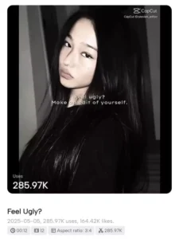

Hey everyone! So you’ve probably seen those catchy My Bubble Gum videos all over your social media feeds, right?
They’re literally everywhere – TikTok, Instagram, YouTube – you name it! And honestly, I totally get why everyone’s obsessed with this trend. The editing looks super professional but guess what? It’s actually way easier to make than you think.
I’ve been getting tons of messages asking me how to create these videos, so I thought I’d put together this complete guide for you guys. Trust me, once you learn this, you’ll be creating viral-worthy content in no time!
What Makes My Bubble Gum Template So Popular?
Look, I’ll be straight with you – this template became a sensation for good reasons. The transitions are smooth, the timing matches perfectly with the beat, and it works with both photos and video clips. Plus, it gives your content that trendy, polished look that everyone loves scrolling through.
The best part? You don’t need to be some editing wizard to pull this off. The template does most of the heavy lifting for you.
Getting Your Hands on the Template

Now, here’s where things get interesting. You’ll need to grab the template links, and I’ve got some fresh ones for you:
Latest My Bubble Gum CapCut Templates:
- Photo Version Template
- Video Clip Version Template
- Extended Mix Template
- Quick Edit Template
Just click on whichever one matches what you want to create, and you’re golden!
Setting Up CapCut for Templates (This is Important!)
Okay, this part trips up a lot of people, so pay attention. If you’re not seeing template options in your CapCut app, here’s the fix:
- Open your CapCut app
- Go to your profile settings
- Look for “Creator Mode” or “Business Account” option
- Switch it on
- Restart the app
Boom! Now you should see all the template options. This little trick saves so much frustration.
Step-by-Step Creation Process
Alright, let’s get into the actual creation process. I’m going to break this down super simply:
Step 1: Choose Your Content First things first – decide if you’re using photos or video clips. The template works differently for each, so pick your lane early.
Step 2: Access the Template Click on your chosen template link. It should open directly in CapCut. If it doesn’t, copy the link and paste it in your browser first.
Step 3: Upload Your Media Select your photos or video clips. Pro tip: choose high-quality content because the template will showcase it beautifully.
Step 4: Preview and Adjust Watch the preview. Does everything sync well with the music? If not, you can trim or adjust your clips.
Step 5: Export and Share Hit that export button and you’re ready to share your masterpiece!
Making Your Video Stand Out
Here’s where I’ll share some insider tips that most people don’t talk about:
Color Coordination: Try to use photos or clips that have similar color schemes. It makes the final video look more professional.
Timing is Everything: If you’re using video clips, make sure the action happens during the beat drops. It creates more impact.
Quality Matters: Always use the highest resolution possible. Blurry content won’t look good no matter how cool the template is.
Troubleshooting Common Issues
Let me address some problems people usually face:
Template Not Loading? Sometimes you need to connect through a VPN if the template links aren’t working in your region.
Music Not Syncing? Make sure you’re not using a modified version of the song. The template is designed for the original track.
Export Taking Forever? Close other apps while exporting. CapCut needs your phone’s full processing power for smooth exports.
Advanced Tips for Better Results
Want to take your videos to the next level? Here are some tricks I’ve learned:
Color Matching: If you want your video to have a specific look, take a screenshot of a video with the style you like. Then use CapCut’s color match feature to apply that same color grading to your content.
Multiple Versions: Create different versions with the same content but different templates. Post them at different times to see which performs better.
Trend Timing: Jump on trends early. The My Bubble Gum template is hot right now, but social media moves fast.
Final Thoughts
Look, creating content that gets noticed isn’t just about following trends – it’s about putting your own spin on them. The My Bubble Gum template gives you a solid foundation, but your creativity and content choice is what will make people stop scrolling and engage.
Don’t overthink it too much. Sometimes the most authentic, simple videos perform the best. Just have fun with it, experiment with different content, and see what resonates with your audience.
Ready to create your first My Bubble Gum video? Go grab those templates and start creating! And hey, if you make something cool, I’d love to see it. Tag me when you post – I always enjoy seeing what you guys come up with.
Happy editing!